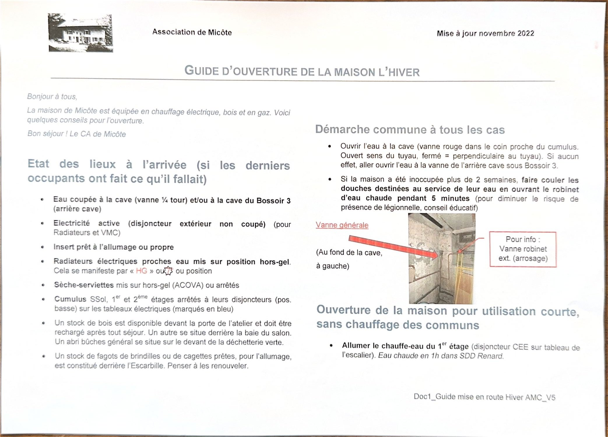
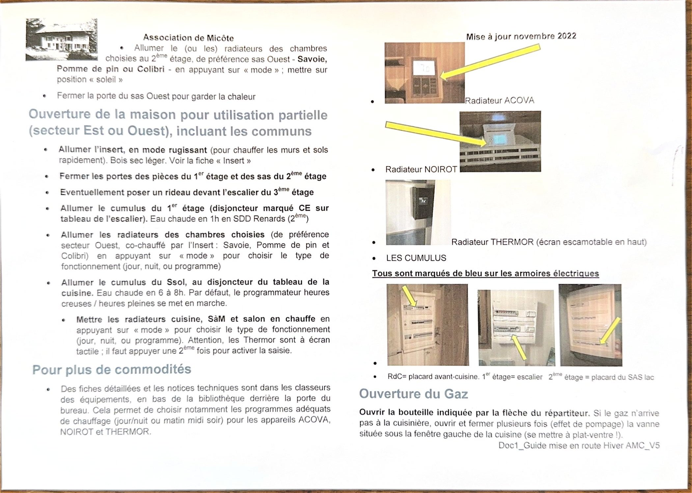

Commencez par ceci : ouvrez l'eau à la cave, puis choisissez ci-dessous le scénario qui correspond à votre séjour. La maison est chauffée à l'électricité, au bois et au gaz.
Étape 1 Ouvrir l'eau
- À la cave, ouvrez la vanne rouge dans le coin proche du cumulus. Ouvert = la poignée est dans le sens du tuyau ; fermé = perpendiculaire au tuyau.
- Si cela ne donne rien, allez ouvrir l'eau à la vanne de l'arrière-cave, sous le Bossoir 3.

Cas 1 Passage court, sans chauffer les communs
- Allumez le chauffe-eau du 1er étage — disjoncteur CEE sur le tableau de l'escalier. Eau chaude en 1 h dans la salle de douche Renard.
- Allumez les radiateurs des chambres choisies au 2e étage, de préférence dans le sas Ouest : Savoie, Pomme de pin ou Colibri. Appuyez sur « mode » et mettez sur position soleil.
- Fermez la porte du sas Ouest pour garder la chaleur.
Cas 2 Utilisation partielle, communs compris
Secteur Est ou Ouest, en incluant les pièces communes.
- Allumez l'insert en mode rugissant pour chauffer murs et sols rapidement, avec du bois sec léger — voir la fiche du poêle.
- Fermez les portes des pièces du 1er étage et des sas du 2e.
- Au besoin, posez un rideau devant l'escalier du 3e étage.
- Allumez le cumulus du 1er (disjoncteur marqué CE sur le tableau de l'escalier). Eau chaude en 1 h en salle de douche Renards.
- Allumez les radiateurs des chambres choisies — de préférence le secteur Ouest, déjà co-chauffé par l'insert : Savoie, Pomme de pin, Colibri.
- Allumez le cumulus du sous-sol au disjoncteur du tableau de la cuisine. Eau chaude en 6 à 8 h ; par défaut, le programmateur heures creuses / heures pleines se met en marche.
- Mettez en chauffe les radiateurs de la cuisine, de la salle à manger et du salon avec le bouton « mode ».
Gaz Ouvrir le gaz
- Ouvrez la bouteille indiquée par la flèche du répartiteur.
- Si le gaz n'arrive pas à la cuisinière, ouvrez et fermez plusieurs fois (effet de pompage) la vanne située sous la fenêtre gauche de la cuisine — il faut se mettre à plat ventre.
Détails complets sur la notice du gaz.
Repères Où sont les tableaux
Les cumulus sont tous marqués de bleu sur les armoires électriques.
- Rez-de-chaussée
- Placard avant-cuisine
- 1er étage
- Escalier
- 2e étage
- Placard du sas Lac
Les fiches détaillées et les notices techniques des équipements sont dans les classeurs, en bas de la bibliothèque derrière la porte du bureau. On y trouve notamment les programmes de chauffage (jour/nuit, matin-midi-soir) des appareils Acova, Noirot et Thermor.
Contrôle Ce que vous devriez trouver à l'arrivée
Si les occupants précédents ont fait le nécessaire :
- 💧 Eau coupée à la cave, et/ou à la cave du Bossoir 3
- ⚡ Électricité active — le disjoncteur extérieur n'est pas coupé (radiateurs et VMC)
- 🔥 Insert prêt à l'allumage, ou propre
- ❄️ Radiateurs et sèche-serviettes sur hors-gel
- 🚿 Cumulus arrêtés à leurs disjoncteurs (repérés en bleu)
- 🪵 Du bois devant la porte de l'atelier, derrière la baie du salon, et sous l'abri général près de la déchetterie verte
- 🔥 Des fagots de brindilles ou cagettes pour l'allumage, derrière l'Escarbille
